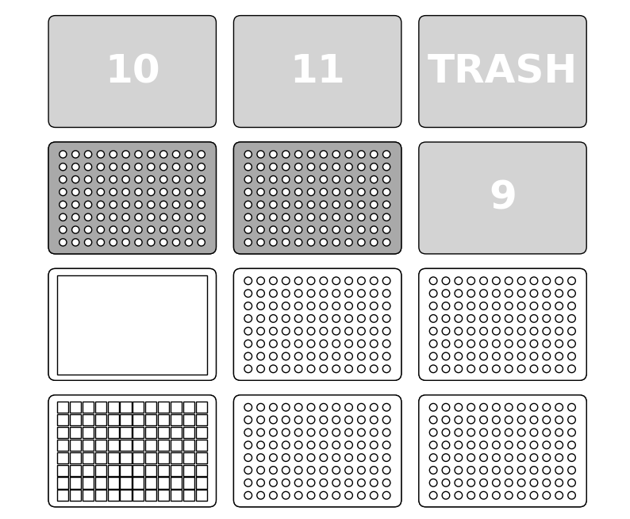

Felipe Xavier Buson
06 February 2024
OP_JN_001 v1.0
Glycerol stocks from 96-well cultures
Description
This protocol creates glycerol stocks on a 96-well plate format out of cultures on a 96-deepwell plate.
For help with how to run Jupyter Notebook protocols, refer to our tutorial
Labware and Liquids

- Right mount: An 8-channel p300 pipette
- Slot 1: Plate with bacterial cultures (96-deepwell, 0,5mL per well)
- Slot 4: Reservoir with 50% glycerol
- Slot 7: Tiprack for p300
- Slot 2, 3, 5 and 6: Destination plates
Execution
- Set up the deck as described above
- Run the cells one by one, paying attention to prompts and instructions
Script
Glycerol stocks from 96-well cultures
Tips and best practices
Monitor the robot for the first few time you run it
Custom labware